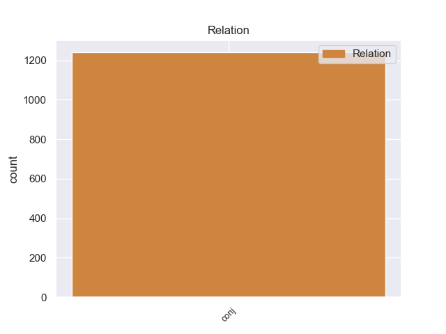
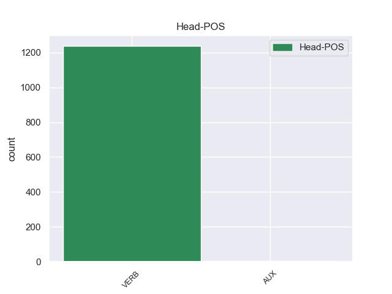
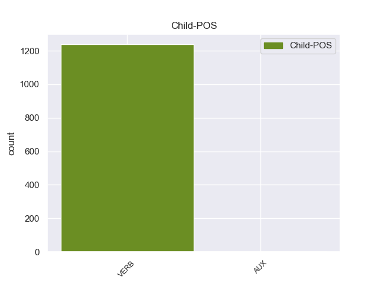

Distribution of features within this leaf



Agreement Rules sorted by frequency.
- When the dependent token is the conjunct(conj) of the head token,
1 Cerramos cerrar VERB _ Mood=Ind|Number=Plur|Person=1|Tense=Pres|VerbForm=Fin 0 _ _ _
2 un _ _ _ _ 0 _ _ _
3 precio _ _ _ _ 0 _ _ _
4 con _ _ _ _ 0 _ _ _
5 la _ _ _ _ 0 _ _ _
6 empresa _ _ _ _ 0 _ _ _
7 de _ _ _ _ 0 _ _ _
8 Rutas _ _ _ _ 0 _ _ _
9 Fluviales _ _ _ _ 0 _ _ _
10 y _ _ _ _ 0 _ _ _
11 a _ _ _ _ 0 _ _ _
12 el _ _ _ _ 0 _ _ _
13 final _ _ _ _ 0 _ _ _
14 quisieron querer VERB _ Mood=Ind|Number=Plur|Person=3|Tense=Past|VerbForm=Fin 1 conj _ _
15 cobrar _ _ _ _ 0 _ _ _
16 nos _ _ _ _ 0 _ _ _
17 100 _ _ _ _ 0 _ _ _
18 € _ _ _ _ 0 _ _ _
19 de _ _ _ _ 0 _ _ _
20 más _ _ _ _ 0 _ _ _
21 . _ _ _ _ 0 _ _ _
Disagree Examples:
1 Lo _ _ _ _ 0 _ _ _
2 acojo acojo VERB _ Mood=Ind|Number=Sing|Person=3|Tense=Past|VerbForm=Fin 0 _ _ _
3 con _ _ _ _ 0 _ _ _
4 la _ _ _ _ 0 _ _ _
5 mayor _ _ _ _ 0 _ _ _
6 satisfacción _ _ _ _ 0 _ _ _
7 , _ _ _ _ 0 _ _ _
8 pero _ _ _ _ 0 _ _ _
9 también _ _ _ _ 0 _ _ _
10 me _ _ _ _ 0 _ _ _
11 gustaría gustar VERB _ Mood=Cnd|Number=Sing|Person=3|VerbForm=Fin 2 conj _ _
12 que _ _ _ _ 0 _ _ _
13 en _ _ _ _ 0 _ _ _
14 todos _ _ _ _ 0 _ _ _
15 los _ _ _ _ 0 _ _ _
16 informes _ _ _ _ 0 _ _ _
17 y _ _ _ _ 0 _ _ _
18 comunicaciones _ _ _ _ 0 _ _ _
19 de _ _ _ _ 0 _ _ _
20 la _ _ _ _ 0 _ _ _
21 Comisión _ _ _ _ 0 _ _ _
22 se _ _ _ _ 0 _ _ _
23 tuviera _ _ _ _ 0 _ _ _
24 en _ _ _ _ 0 _ _ _
25 cuenta _ _ _ _ 0 _ _ _
26 automáticamente _ _ _ _ 0 _ _ _
27 el _ _ _ _ 0 _ _ _
28 medio _ _ _ _ 0 _ _ _
29 ambiente _ _ _ _ 0 _ _ _
30 . _ _ _ _ 0 _ _ _
1 No _ _ _ _ 0 _ _ _
2 voy ir VERB _ Mood=Ind|Number=Sing|Person=1|Tense=Pres|VerbForm=Fin 0 _ _ _
3 a _ _ _ _ 0 _ _ _
4 entrar _ _ _ _ 0 _ _ _
5 en _ _ _ _ 0 _ _ _
6 detalles _ _ _ _ 0 _ _ _
7 por _ _ _ _ 0 _ _ _
8 falta _ _ _ _ 0 _ _ _
9 de _ _ _ _ 0 _ _ _
10 tiempo _ _ _ _ 0 _ _ _
11 , _ _ _ _ 0 _ _ _
12 pero _ _ _ _ 0 _ _ _
13 esto _ _ _ _ 0 _ _ _
14 quizá _ _ _ _ 0 _ _ _
15 sirva servir VERB _ Mood=Sub|Number=Sing|Person=3|Tense=Pres|VerbForm=Fin 2 conj _ _
16 de _ _ _ _ 0 _ _ _
17 ilustración _ _ _ _ 0 _ _ _
18 de _ _ _ _ 0 _ _ _
19 que _ _ _ _ 0 _ _ _
20 la _ _ _ _ 0 _ _ _
21 Comisión _ _ _ _ 0 _ _ _
22 no _ _ _ _ 0 _ _ _
23 detiene _ _ _ _ 0 _ _ _
24 su _ _ _ _ 0 _ _ _
25 trabajo _ _ _ _ 0 _ _ _
26 según _ _ _ _ 0 _ _ _
27 va _ _ _ _ 0 _ _ _
28 avanzando _ _ _ _ 0 _ _ _
29 la _ _ _ _ 0 _ _ _
30 liberalización _ _ _ _ 0 _ _ _
31 . _ _ _ _ 0 _ _ _
1 Me _ _ _ _ 0 _ _ _
2 referiré referirar VERB _ Mood=Ind|Number=Sing|Person=1|Tense=Past|VerbForm=Fin 0 _ _ _
3 finalmente _ _ _ _ 0 _ _ _
4 a _ _ _ _ 0 _ _ _
5 el _ _ _ _ 0 _ _ _
6 presupuesto _ _ _ _ 0 _ _ _
7 de _ _ _ _ 0 _ _ _
8 el _ _ _ _ 0 _ _ _
9 Parlamento _ _ _ _ 0 _ _ _
10 Europeo _ _ _ _ 0 _ _ _
11 , _ _ _ _ 0 _ _ _
12 y _ _ _ _ 0 _ _ _
13 quisiera querer VERB _ Mood=Sub|Number=Sing|Person=3|Tense=Imp|VerbForm=Fin 2 conj _ _
14 contestar _ _ _ _ 0 _ _ _
15 a _ _ _ _ 0 _ _ _
16 quien _ _ _ _ 0 _ _ _
17 dice _ _ _ _ 0 _ _ _
18 que _ _ _ _ 0 _ _ _
19 como _ _ _ _ 0 _ _ _
20 somos _ _ _ _ 0 _ _ _
21 con _ _ _ _ 0 _ _ _
22 ustedes _ _ _ _ 0 _ _ _
23 supuestamente _ _ _ _ 0 _ _ _
24 duros _ _ _ _ 0 _ _ _
25 o _ _ _ _ 0 _ _ _
26 exigentes _ _ _ _ 0 _ _ _
27 , _ _ _ _ 0 _ _ _
28 lo _ _ _ _ 0 _ _ _
29 tenemos _ _ _ _ 0 _ _ _
30 que _ _ _ _ 0 _ _ _
31 ser _ _ _ _ 0 _ _ _
32 también _ _ _ _ 0 _ _ _
33 con _ _ _ _ 0 _ _ _
34 nuestra _ _ _ _ 0 _ _ _
35 propia _ _ _ _ 0 _ _ _
36 casa _ _ _ _ 0 _ _ _
37 . _ _ _ _ 0 _ _ _
1 Bastaría Bastar VERB _ Mood=Cnd|Number=Sing|Person=3|VerbForm=Fin 0 _ _ _
2 con _ _ _ _ 0 _ _ _
3 sólo _ _ _ _ 0 _ _ _
4 una _ _ _ _ 0 _ _ _
5 fracción _ _ _ _ 0 _ _ _
6 de _ _ _ _ 0 _ _ _
7 las _ _ _ _ 0 _ _ _
8 riquezas _ _ _ _ 0 _ _ _
9 descomunales _ _ _ _ 0 _ _ _
10 acumuladas _ _ _ _ 0 _ _ _
11 por _ _ _ _ 0 _ _ _
12 los _ _ _ _ 0 _ _ _
13 grandes _ _ _ _ 0 _ _ _
14 grupos _ _ _ _ 0 _ _ _
15 para _ _ _ _ 0 _ _ _
16 que _ _ _ _ 0 _ _ _
17 esos _ _ _ _ 0 _ _ _
18 países _ _ _ _ 0 _ _ _
19 pudieran _ _ _ _ 0 _ _ _
20 salir _ _ _ _ 0 _ _ _
21 de _ _ _ _ 0 _ _ _
22 la _ _ _ _ 0 _ _ _
23 miseria _ _ _ _ 0 _ _ _
24 , _ _ _ _ 0 _ _ _
25 pero _ _ _ _ 0 _ _ _
26 mientras _ _ _ _ 0 _ _ _
27 no _ _ _ _ 0 _ _ _
28 nos _ _ _ _ 0 _ _ _
29 atrevamos atrevar VERB _ Mood=Ind|Number=Plur|Person=1|Tense=Pres|VerbForm=Fin 1 conj _ _
30 a _ _ _ _ 0 _ _ _
31 echar _ _ _ _ 0 _ _ _
32 la _ _ _ _ 0 _ _ _
33 culpa _ _ _ _ 0 _ _ _
34 a _ _ _ _ 0 _ _ _
35 los _ _ _ _ 0 _ _ _
36 grandes _ _ _ _ 0 _ _ _
37 grupos _ _ _ _ 0 _ _ _
38 capitalistas _ _ _ _ 0 _ _ _
39 , _ _ _ _ 0 _ _ _
40 no _ _ _ _ 0 _ _ _
41 haremos _ _ _ _ 0 _ _ _
42 más _ _ _ _ 0 _ _ _
43 que _ _ _ _ 0 _ _ _
44 ocultar _ _ _ _ 0 _ _ _
45 los _ _ _ _ 0 _ _ _
46 verdaderos _ _ _ _ 0 _ _ _
47 problemas _ _ _ _ 0 _ _ _
48 . _ _ _ _ 0 _ _ _
1 Los _ _ _ _ 0 _ _ _
2 Estados _ _ _ _ 0 _ _ _
3 miembros _ _ _ _ 0 _ _ _
4 deben _ _ _ _ 0 _ _ _
5 actuar _ _ _ _ 0 _ _ _
6 enérgicamente _ _ _ _ 0 _ _ _
7 contra _ _ _ _ 0 _ _ _
8 todo _ _ _ _ 0 _ _ _
9 lo _ _ _ _ 0 _ _ _
10 que _ _ _ _ 0 _ _ _
11 favorezca favorecer VERB _ Mood=Sub|Number=Sing|Person=3|Tense=Pres|VerbForm=Fin 0 _ _ _
12 o _ _ _ _ 0 _ _ _
13 reste reste VERB _ Mood=Imp|Number=Sing|Person=3|VerbForm=Fin 11 conj _ _
14 importancia _ _ _ _ 0 _ _ _
15 a _ _ _ _ 0 _ _ _
16 el _ _ _ _ 0 _ _ _
17 turismo _ _ _ _ 0 _ _ _
18 sexual _ _ _ _ 0 _ _ _
19 que _ _ _ _ 0 _ _ _
20 afecta _ _ _ _ 0 _ _ _
21 a _ _ _ _ 0 _ _ _
22 niños _ _ _ _ 0 _ _ _
23 . _ _ _ _ 0 _ _ _